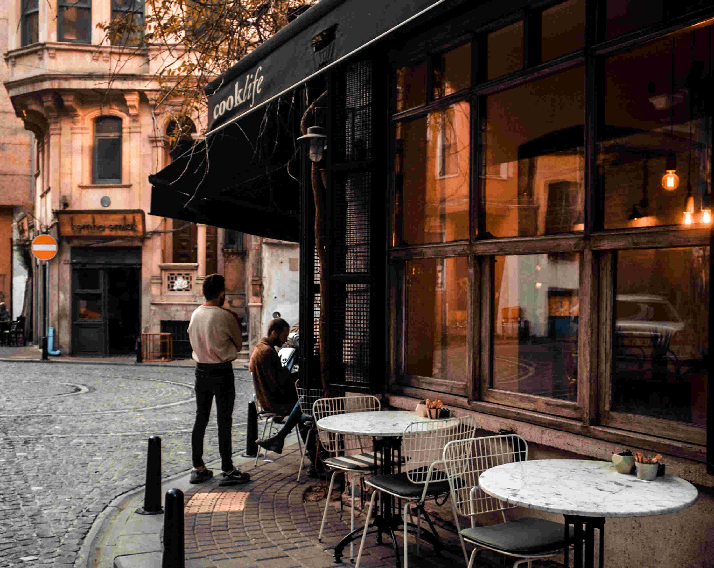

About Us
The HotStoppers originated in 2002 from a small countryside of Vancouver and now offers a unique and authentic Coffee house environment unlike any other outlet present in the city. We are not just an outlet where you drop in and get your morning cup of coffee, we aim to provide a home-like environment where you can cherish and savor the bliss that coffee is. Also, we have features like a separate fireplace with a couch where you can relax after a tiring workday, or sit and prepare yourself for an important meeting. We keep a student-friendly environment, therefore, only soft, melodic music is played allowing the students to concentrate on their work while they sip our own branded coffee. Our master brewer would happily comply with your request and make your own special coffee your own special way! Talking about coffee, our coffee is imported straight from the fields of Columbia and Guatemala, and brewed by our master brewers to get you going throughout your day! We have a wide range of snacks and fast-foods to enjoy with your very own customized coffee. From Pineapple-Filled Croissant to New-York glazed Bagels, we got your morning coffee and midnight snacks covered. As we own our very own BAKERY, and talented and skilled baker from the beautiful country of France, we got your cravings covered! Go check our Instagram & Facebook pages for more info! See you around! :D
“This is a project of CIS 245, Intermediate Web Publishing Course in UFV, Instructed and requested by Professor Reza Abbasi"